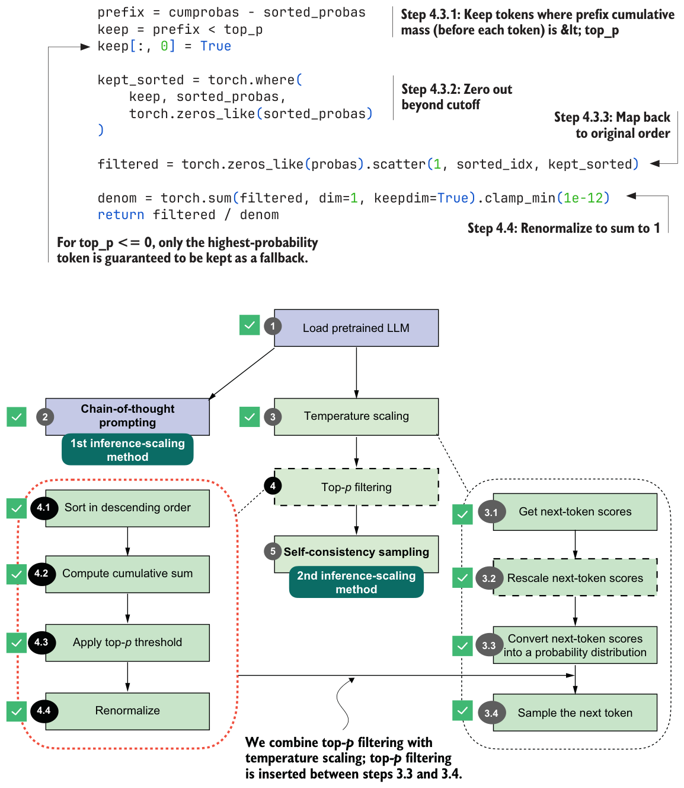

4.5.2Adding a top-p filter to the text generation function
We’ve walked through the top-p filtering steps using a toy example. Now let’s add the four top-p filtering steps (steps 4.1–4.4 in figure 4.16) to our existing text generation function between the probability conversion and the sampling.
We’ll first assemble the top-p filtering steps from the previous section into a single, convenient function we can call.
def top_p_filter(probas, top_p):
if top_p is None or top_p >= 1.0:
return probas
sorted_probas, sorted_idx = torch.sort(probas, dim=1, descending=True)
cumprobas = torch.cumsum(sorted_probas, dim=1) prefix = cumprobas - sorted_probas
keep = prefix < top_p
keep[:, 0] = True
kept_sorted = torch.where(
keep, sorted_probas,
torch.zeros_like(sorted_probas)
)
filtered = torch.zeros_like(probas).scatter(1, sorted_idx, kept_sorted)
denom = torch.sum(filtered, dim=1, keepdim=True).clamp_min(1e-12)
return filtered / denom
The top_p_filter function in listing 4.15 first sorts token probabilities and computes their cumulative sum. It then keeps tokens whose prefix cumulative mass (the cumulative probability before each token) is below the top_p threshold, which includes the token that first crosses the threshold. It zeroes out the rest, maps the kept values back to their original order, and renormalizes the remaining probabilities so they sum to 1 again.
Before we add this top_p_filter function to our text generation functions, let’s give it a try and see how it works with the previous temperature-scaling approach. First, we get the logits:
with torch.inference_mode():
next_token_logits = model(input_token_ids)[:, -1]
print(next_token_logits.shape)The preceding code prints the dimensions [1, 151936] for the next_token_logits tensor. We are now working with the real data and full vocabulary, which has 151,936 entries.
Next, we rescale the logits into probability scores and apply temperature scaling with a temperature of 0.35, as before:
torch.manual_seed(123)
probas_lowT = torch.softmax(
scale_logits_by_temperature(next_token_logits, 0.35), dim=-1
)
count_samples(probas_lowT, threshold=1, tokenizer=tokenizer)This code is similar to what we used in the previous temperature-scaling examples, and it prints the following sampled outputs:
' __': 158x
' Berlin': 435x
' ____': 169x
' ______': 209x
' Munich': 3x
' Hamburg': 3x
' _____': 18xNow, let’s add the top-p filter and see how it changes the results:
torch.manual_seed(123)
probas_lowT = torch.softmax(
scale_logits_by_temperature(next_token_logits, 0.35), dim=-1
)
probas_lowT_filtered = top_p_filter(probas_lowT, top_p=0.8)
count_samples(probas_lowT_filtered, threshold=1, tokenizer=tokenizer)With a top_p threshold of 0.8, which is a typical value, we exclude the lowest-probability tokens whose cumulative probability makes up the remaining 20%. The sampled outputs are now as follows:
' Berlin': 534x
' ____': 217x
' ______': 249xAs you can see, we now either select the correct city (removing " Munich" and" Hamburg" as sampled options) or we print the underscore token, which the model might use to format the text as a quiz question, with ' ______' as a placeholder.
Now let’s return to our math query and add the top-p filter to the generate_text_ temp_stream_cache function we coded in listing 4.8. The updated function, now called
generate_text_top_p_stream_cache, is shown next.@torch.inference_mode()
def generate_text_top_p_stream_cache(
model,
token_ids,
max_new_tokens,
eos_token_id=None,
temperature=0.,
top_p=None
):
model.eval()
cache = KVCache(n_layers=model.cfg["n_layers"])
model.reset_kv_cache()
out = model(token_ids, cache=cache)[:, -1]
for _ in range(max_new_tokens):
orig_device = token_ids.device
if temperature is None or temperature == 0.0:
next_token = torch.argmax(out, dim=-1, keepdim=True)
else:
logits = scale_logits_by_temperature(out, temperature)
probas = torch.softmax(logits, dim=-1)
probas = top_p_filter(probas, top_p)
next_token = torch.multinomial(probas.cpu(), num_samples=1)
next_token = next_token.to(orig_device)
if (eos_token_id is not None
and torch.all(next_token == eos_token_id)):
break
yield next_token
out = model(next_token, cache=cache)[:, -1]Let’s plug this new text generation function into generate_text_stream_concat_flex, as we did before with the temperature-scaling version of the text generation function:
torch.manual_seed(123)
response = generate_text_stream_concat_flex(
model, tokenizer, prompt, device,
max_new_tokens=2048, verbose=True,
generate_func=generate_text_top_p_stream_cache,
temperature=0.5,
top_p=0.8,
)The output is " \boxed{18}", which is still incorrect. Everything we have done so far is to let us sample different outputs. In the next section, we’ll use generate_text_stream_ concat_flex with our augmented text generation function (generate_text_top_p_ stream_cache) to sample different outputs when implementing the self-consistency inference-time-scaling technique.
Top-k filtering
Exercise 4.2: Using temperature scaling and top-p filtering on MATH-500
evaluate_math500_stream function from listing 3.15 to see whether adding temperature scaling and top-p sampling will change the MATH-500 accuracy of the base model. You can use a setting of 0.9 for both temperature scaling and top-p.